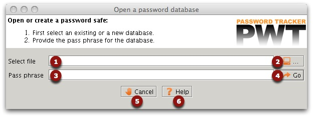

Start Screen

The start screen has two main functions:
- Create new safe files.
- Open existing safe files.
If this is the first time you start the application, you can also have
a look at the Quick start
page. It explains in detail how to create a new password safe.
Create new safe files
- Enter the path of a new safe (text box 1). The filename should not exist. If there already is a file with the
same name, Password Tracker will try to open it, so you first have to remove or rename the existing file. Note:
if you do not add an extension, the application will assume a ".dat" extension. This behavior can be modified in
the preferences. You can use the browse button to interactively select a file and
its location (button 2).
- Enter the pass phrase of the new safe (text box 3).
- Click the "Go" button (button 4).
You can always abort the application by clicking button 5 "Cancel".
Clicking the "Help" button (button 6) will start the on line help system.
The application will ask a confirmation that it is your intention to
create a new safe. If you confirm this, a new empty safe will be
created. You will be redirected to the main
screen You can start adding new entries and save your data.
Open existing safe files
- Enter the path of an existing safe (text box 1). The file
should exist. Note: if you do not add an extension, the application
will assume a ".dat" extension. This behavior can be modified in the preferences. You
can use the browse button to interactively select a file and its
location (button 2).
- Enter the pass phrase to unlock the file (text box 3)
- Click the Go button.
The application will start unlocking the file using the pass phrase. You will be redirected to the
main screen.